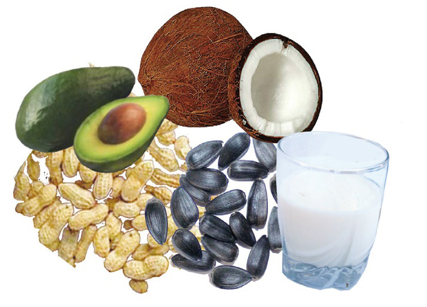

7
Student’s Book - Form Two

Biology for Secondary Schools
When proteins are consumed, they are broken down into amino acids that are absorbed into the bloodstream and used by the body to produce its own proteins.
For example, the haemoglobin found in the red blood cells is one of the body proteins. Haemoglobin enables red blood cells to transport oxygen in our bodies. Other examples of body proteins include antibodies which provide body immunity and enzymes that are involved in food digestion. In addition, many hormones are protein in nature. They control and regulate various processes in the body.
Lipids
They are organic compounds made of
carbon, hydrogen, and oxygen. They are
insoluble in water but soluble in organic
solvents such as ether and benzene. The
main forms of dietary lipids are fats and
oils. Fats are solid at room temperature
while oils are liquid at room temperature.
Lipids are made up of fatty acids and
glycerol. Fatty acids can be essential or non-essential. Essential fatty acids are
obtained from foods eaten while non-
essential fatty acids can be made by the
body. The body cannot produce essential
fatty acids. It is, therefore, important
to eat foods that contain essential fatty acids. Examples of such foods are oily fish, nuts, avocados, oil, and seeds such as sunflower and sesame, as shown in
Figure 1.4.

Figure 1.4: Sources of lipids
Functions of lipids
Lipids are a source of energy. They
provide more energy than all other food
substances. Each gram of lipid provides
nine kilocalories (kcal) of energy.
They are important components of cell membranes. Fat deposits surround and
protect body organs such as the heart
and kidneys. Stores of fat in the adipose
tissue under the skin help to regulate
body temperature by insulating the
body against loss of heat. Fat-soluble
vitamins are also stored in fatty tissues.
Essential fatty acids are important for
the formation of substances that help to control blood pressure and activate the body’s immune response.
Carbohydrates
Carbohydrates are organic compounds made up of small repeating units called
monosaccharides. The small repeating
units form bond with each other to make
a larger molecule. Monosaccharides are
mainly made up of carbon, hydrogen,
and oxygen. Carbohydrates are sugar


08/04/2026 10:18:10